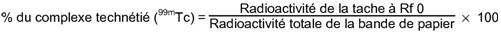
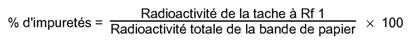

RÉSUMÉ DES CARACTÉRISTIQUES DU PRODUIT
ANSM - Mis à jour le : 16/12/2009
NANOCIS, Trousse pour la préparation de la solution injectable de sulfure de rhénium colloïdal et de technétium (99mTc) (nanocolloïde)
2. COMPOSITION QUALITATIVE ET QUANTITATIVE
Sulfure de rhénium (Re2S7): 0,24 mg/ flacon A
Correspondant à: 0,15 mg de rhénium élément (Re)
Pour la liste complète des excipients, voir rubrique 6.1.
Le produit ne contient pas de conservateur antimicrobien.
Les particules colloïdales présentent un diamètre moyen de 100 nm environ (analyse spectroscopique de corrélation de photons et de mouvement brownien).
Trousse pour préparation radiopharmaceutique.
Lyophilisat et solvant pour solution injectable.
4.1. Indications thérapeutiques
Ce médicament est à usage diagnostique uniquement.
Après marquage avec une solution injectable de pertechnétate (99mTc) de sodium:
Lymphographie pour la visualisation du système lymphatique régional:
· Imagerie préopératoire et détection peropératoire des ganglions sentinelles des tumeurs suivantes: cancer du sein, mélanome, cancers de la vulve, du pénis, de la prostate, cancer épidermoïde de la tête et du cou.
· Imagerie du flux lymphatique régional avant radiothérapie individualisée.
· Imagerie du flux lymphatique pour le diagnostic de lymphœdème des extrémités.
Exploration digestive (scintigraphie gastro-œsophagienne).
4.2. Posologie et mode d'administration
Lymphographie pour visualisation des ganglions sentinelles:
L'activité de solution injectable de sulfure de rhénium colloïdal et de technétium (99mTc) à administrer chez l'adulte dépend de l'indication, de la région anatomique à étudier et du délai entre l'injection du produit et l'acquisition des images.
Le choix du site d'administration se fait en fonction du territoire anatomique à étudier. L'injection est réalisée sans surpression au niveau d'un tissu conjonctif lâche présentant une perfusion sanguine correcte. Avant d'injecter le produit, il convient d'exclure une effraction vasculaire en aspirant à la seringue.
Mélanome: 10 - 100 MBq par voie intradermique répartis en 4 dépôts autour de la tumeur. Il est recommandé de ne pas dépasser un volume de 0,2 mL à chaque dépôt.
Les images scintigraphiques sont acquises immédiatement après l'injection et régulièrement répétées jusqu'à ce que le ganglion sentinelle soit visualisé.
Cancer du sein: une activité totale de 5 à 20 MBq (0,2 mL) répartie en une ou plusieurs injections, sous palpation ou contrôle échographique.
L'activité injectée varie en fonction du temps écoulé entre l'imagerie scintigraphique et la chirurgie.
Un volume maximal de 0,5 mL peut être justifié en cas de tumeur profonde.
En cas de tumeur superficielle, la voie d'administration peut être soit intradermique en regard de la tumeur, soit sous-cutanée péri-tumorale. L'injection peut être réalisée en péri-aréolaire en cas de tumeur des quadrants supérieurs.
En cas de tumeur profonde, la voie d'administration péri-tumorale est recommandée.
Les images scintigraphiques du sein et de la région axillaire sont acquises entre 15 et 30 minutes puis à 3 heures après injection.
Cancer de la prostate: 200 MBq par voie transrectale, dans les lobes prostatiques sous contrôle échographique (une injection de 100 MBq dans 0,3 mL pour chaque lobe prostatique).
Le traceur est injecté la veille de l'intervention. Le patient aura reçu préalablement une prophylaxie antibiotique à large spectre (comme pour toute biopsie prostatique).
Les images scintigraphiques sont réalisées immédiatement après que le patient ait vidé sa vessie.
Cancer du pénis: la veille de l'intervention 60 MBq sont administrés par voie intradermique dans les 2 centimètres autour de la tumeur.
Les images scintigraphiques sont obtenues juste après l'injection et toutes les 30 minutes jusqu'à visualisation du ganglion sentinelle.
Cancer de la vulve: la veille de l'intervention chirurgicale, injection intradermique de 60 à 120 MBq dans 0,2 mL en 4 dépôts autour de la tumeur.
Les images scintigraphiques sont obtenues juste après l'injection et toutes les 30 minutes jusqu'à visualisation du ganglion sentinelle.
Cancer épidermoïde de la tête et cou: sous anesthésie locale, injection de 20 à 40 MBq dans 0,5 à 1,0 mL par voie sous-muqueuse à la périphérie de la tumeur. L'injection est aussitôt suivie d'un rinçage de la bouche par une solution non alcoolisée afin de réduire la quantité d'activité qui pourrait être déglutie par le patient.
Les images scintigraphiques sont acquises immédiatement après l'injection et poursuivies jusqu'à 2 heures après injection.
Imagerie du flux lymphatique avant radiothérapie ou à la recherche d'un lymphœdème: 20 à 200 MBq par injection sous-cutanée unique ou multiple. L'activité est généralement inférieure à 20 MBq par site d'injection. Les volumes recommandés vont de 0,2 à 0,3 mL. Un volume maximal de 0,5 mL ne doit pas être dépassé.
Etude du reflux gastro-œsophagien:
Chez l'adulte et chez l'enfant, l'activité de solution injectable de sulfure de rhénium colloïdal et de technétium (99mTc) administrée par voie orale est de 3,5 à 12 MBq (d'autres activités peuvent se justifier). Le produit est dilué dans une phase liquide conformément au protocole habituel de chaque centre.
Une scintigraphie dynamique peut être réalisée parallèlement à l'enregistrement d'images statiques.
Hypersensibilité à la substance active ou à l'un des excipients.
4.4. Mises en garde spéciales et précautions d'emploi
Ce produit est un médicament radiopharmaceutique.
Les produits radiopharmaceutiques ne doivent être réceptionnés, utilisés et administrés que par des personnes autorisées dans des services agréés. Leur réception, leur stockage, leur utilisation, leur transfert et leur élimination sont soumis aux réglementations et aux autorisations appropriées des autorités compétentes.
Les produits radiopharmaceutiques doivent être préparés de manière à satisfaire à la fois aux normes de radioprotection et de qualité pharmaceutique. Les précautions appropriées d'asepsie doivent être prises afin de satisfaire aux exigences des Bonnes Pratiques de Fabrication pharmaceutique.
La lymphoscintigraphie est déconseillée chez les patients présentant une obstruction complète du réseau lymphatique, notamment au niveau des membres inférieurs, en raison du risque d'irradiation au niveau des sites d'injection.
La pratique du repérage du ganglion sentinelle nécessite que l'ensemble de l'équipe prenant en charge le patient soit formée à cette technique.
Les données de la littérature démontrent une amélioration du taux d'identification par la double détection: radiopharmaceutique et colorimétrique.
L'administration du produit peut très rarement entraîner des effets secondaires de type allergique. Les médicaments et le matériel de réanimation permettant de faire face à une telle situation doivent toujours être à portée de main pendant l'examen.
4.5. Interactions avec d'autres médicaments et autres formes d'interactions
L'administration d'anesthésiques locaux ou de hyaluronidase avant l'injection de la préparation marquée perturbe la captation par le système lymphatique.
Lorsqu'il est nécessaire d'administrer un produit radiopharmaceutique à la femme en âge de procréer, toute suspicion de grossesse doit être écartée. Toute femme n'ayant pas eu ses règles doit être considérée comme enceinte jusqu'à preuve du contraire. Dans le doute, il est important que l'exposition aux radiations soit réduite au minimum pour obtenir les informations cliniques souhaitées. D'autres techniques n'impliquant pas l'emploi de radiations ionisantes peuvent être envisagées si elles n'altèrent pas la qualité diagnostique.
Les examens utilisant des radionucléides chez la femme enceinte entraînent également l'irradiation de fœtus. Il ne faut réaliser au cours de la grossesse que les seules investigations absolument nécessaires lorsque le bénéfice probable dépasse les risques encourus par la mère et le fœtus.
Si l'administration d'un produit radioactif est indispensable, le lait sera tiré avant l'injection et conservé pour être utilisé ultérieurement. L'allaitement doit être suspendu pendant au moins 12 heures après l'injection et le lait produit pendant cette période doit être éliminé. L'allaitement peut être repris lorsque l'activité dans le lait ne risque pas d'entraîner une dose de radiation pour l'enfant supérieure à 1 mSv.
4.7. Effets sur l'aptitude à conduire des véhicules et à utiliser des machines
Les effets sur l'aptitude à conduire des véhicules et à utiliser des machines n'ont pas été étudiés.
L'administration de la solution hypertonique de sulfure de rhénium colloïdal et de technétium (99mTc) peut entraîner une douleur au point d'injection.
Pour tout patient, l'exposition aux radiations ionisantes doit être justifiée par le bénéfice diagnostique attendu. La radioactivité administrée doit être telle que l'irradiation qui en découle soit aussi faible que possible, en gardant à l'esprit la nécessité d'obtenir le diagnostic requis.
L'exposition aux radiations ionisantes peut éventuellement induire des cancers ou développer des déficiences héréditaires. L'expérience montre que, pour les examens diagnostiques en médecine nucléaire, la fréquence de ces effets indésirables est très faible en raison des faibles activités utilisées.
Pour la plupart des examens de médecine nucléaire, la dose de radiations délivrée (E: dose efficace) est inférieure à 20 mSv.
En cas d'administration d'une activité excessive par voie orale, dans le cadre de la scintigraphie gastro-œsophagienne, la dose absorbée par le patient peut être réduite en favorisant l'élimination du radionucléide.
En cas d'administration d'une activité excessive après injection sous-cutanée, dans le cadre d'une lymphographie, il n'est pas possible de réduire la dose absorbée par le patient en raison de la faible élimination du radionucléide.
5. PROPRIETES PHARMACOLOGIQUES
5.1. Propriétés pharmacodynamiques
Classe pharmacothérapeutique: Produit radiopharmaceutique à usage diagnostique.
Code ATC: V09DB06
Aux concentrations chimiques et aux activités utilisées pour les examens de diagnostic, le sulfure de rhénium colloïdal et de technétium (99mTc) paraît n'avoir aucune activité pharmacodynamique.
5.2. Propriétés pharmacocinétiques
Injection sous-cutanée:
Le sulfure de rhénium colloïdal et de technétium (99mTc) est administré par injection sous-cutanée, généralement dans les espaces interdigitaux des mains ou des pieds, ou en périphérie de la tumeur.
La paroi des capillaires lymphatiques est dépourvue de membrane basale et présente des solutions de continuité avec des pores, de telle sorte que les colloïdes de petite taille sont rapidement absorbés dans le liquide lymphatique à partir du liquide interstitiel. Durant la circulation de la lymphe à travers les ganglions, une partie des colloïdes est phagocytée par les cellules bordantes du système réticulo-endothélial. Ce processus se reproduit ultérieurement au niveau de chaque ganglion lymphatique.
Le produit administré est un colloïde métallique qui est en partie phagocyté et stocké au niveau du premier groupe ganglionnaire.
L'activité au niveau des ganglions lymphatiques montre que 3,06 ± 0,10% de l'activité administrée sont fixés à la 1ère heure et 3,83 ± 0,16% à la 3ème heure.
Au cours des premières heures après l'administration, le passage dans le compartiment vasculaire est négligeable.
Les données expérimentales montrent que le produit est éliminé par voie urinaire et hépatique. 3 heures après l'injection, 11% de l'activité administrée sont retrouvés dans le parenchyme hépatique. L'activité au niveau vésical augmente progressivement jusqu'à atteindre 14,6% de la dose injectée à la 60ème minute.
Administration par voie orale:
Le sulfure de rhénium colloïdal et de technétium (99mTc) administré par voie orale n'est pas résorbé par le tube digestif.
5.3. Données de sécurité préclinique
Chez la souris, la dose létale moyenne (DL50) du perrhénate de potassium par voie intra-péritonéale est de 2,8 g/kg environ. Ramenée au rhénium, la DL50 est de 180 mg/kg.
Dans les études de la toxicité aiguë par voie intraveineuse chez la souris, le nanocolloïde de sulfure de rhénium n'a entraîné aucune anomalie après l'injection d'une préparation, à la dose de 2,5 mg de sulfure de rhénium/kg et 50 mg de pyrophosphate de sodium/kg ni au cours des 7 jours suivant cette administration.
Chez le rat, la DL50 du pyrophosphate d'étain par injection intraveineuse est de 41,0 ± 1,6 mg/kg.
Une activité de 185 MBq administrée par voie sous-cutanée chez l'homme apporte 0,007 mg/kg de pyrophosphate de sodium, soit 12.500 fois moins que la DL50 par voie intraveineuse chez la souris; cette activité apporte également 0,001 mg/kg de chlorure d'étain, soit 23.000 fois moins que la DL50 chez la souris.
Administration simultanée de pyrophosphate de sodium et de chlorure d'étain: la toxicité aiguë par voie intraveineuse chez la souris se traduit par une DL50 de 100 mg de Na4P2O7, 10 H2O/kg.
Les études, à long terme sur le potentiel mutagène, tératogène et cancérogène n'ont pas été effectuées.
Flacon A (sous atmosphère d'azote)
Gélatine
Acide ascorbique
Acide chlorhydrique concentré
Hydroxyde de sodium (pour ajustement du pH)
Eau pour préparations injectables
Flacon B (sous atmosphère d'azote)
Pyrophosphate de sodium décahydraté
Chlorure d'étain dihydraté
Hydroxyde de sodium (pour ajustement du pH)
Acide chlorhydrique concentré (pour ajustement du pH)
Ce médicament ne doit pas être mélangé avec d'autres médicaments à l'exception de ceux mentionnés dans la rubrique 12.
6 mois.
La date de péremption est indiquée sur le conditionnement extérieur ainsi que sur chaque flacon.
Le produit marqué doit être utilisé dans les 4 heures après reconstitution.
6.4. Précautions particulières de conservation
Conserver la trousse au réfrigérateur (entre 2°C et 8°C).
Conserver le produit marqué à une température ne dépassant pas 25°C.
La conservation du produit doit se faire en accord avec les réglementations nationales relatives aux produits radioactifs.
6.5. Nature et contenu de l'emballage extérieur
a) Flacon (A) de 15 mL en verre étiré incolore, de type I de la Pharmacopée Européenne, contenant 1 mL de solution stérile;
Et
b) Flacon (B) de 15 mL, en verre étiré incolore, de type I de la Pharmacopée Européenne, contenant un lyophilisat à reconstituer avec la solution contenue dans le flacon (A). Le marquage est effectué à l'aide d'une solution de pertechnétate de sodium (99mTc) de la Pharmacopée Européenne.
Présentation: Contient 5 flacons A et 5 flacons B.
6.6. Précautions particulières d’élimination et de manipulation
L'administration de produits radiopharmaceutiques présente des risques pour l'entourage du patient en raison de l'irradiation externe ou de la contamination par les urines, les vomissements, les expectorations. Par conséquent il faut prendre des mesures de protection contre les radiations conformément aux réglementations nationales.
Tout produit non utilisé ou déchet doit être éliminé conformément à la réglementation en vigueur.
7. TITULAIRE DE L’AUTORISATION DE MISE SUR LE MARCHE
CIS BIO INTERNATIONAL
RN 306 - SACLAY
BP 32
91192 GIF-SUR-YVETTE CEDEX
8. NUMERO(S) D’AUTORISATION DE MISE SUR LE MARCHE
· 553 080-8: 5 flacons de 1 mL de solution accompagnés de 5 flacons de 3,5 mg de lyophilisat.
9. DATE DE PREMIERE AUTORISATION/DE RENOUVELLEMENT DE L’AUTORISATION
[à compléter par le titulaire]
10. DATE DE MISE A JOUR DU TEXTE
[à compléter par le titulaire]
Le technétium (99mTc) décroît en émettant un rayonnement gamma d'une énergie moyenne de 140 keV, avec une période de 6 heures, en donnant du technétium (99Tc) considéré comme quasi stable.
Dosimétrie après administration sous-cutanée:
Les doses de radiation absorbées par un patient de 70 kg après administration sous-cutanée du sulfure de rhénium colloïdal et de technétium (99mTc) ont été calculées selon le modèle dosimétrique prenant pour hypothèse une injection sous-cutanée dans le sein et un drainage lymphatique de 20 % de l'activité administrée.
Table 1: Doses absorbées par unité d'activité administrée (mGy/MBq) et dose efficace (mSv/MBq) après injection sous-cutanée dans le sein
|
Organe |
Dose absorbée par activitée injectée au site d'injection (mGy/MBq) |
mGy/MBq/% drainage lymphatique |
Dose absorbée pour une activitée injectée de 250 MBq et un drainage lymphatique de 20 % (mGy) |
|
Seins |
5,6 × 10-2 |
2,58 × 10-5 |
14,13 |
|
Cœur |
1,04 × 10-2 |
8,36 × 10-5 |
3,02 |
|
Thymus |
9,94 × 10-3 |
2,56 × 10-5 |
2,61 |
|
Poumons |
7,85 × 10-3 |
7,70 × 10-5 |
2,34 |
|
Surfaces osseuses |
2,97 × 10-3 |
1,10 × 10-4 |
1,29 |
|
Peau |
2,80 × 10-3 |
1,53 × 10-5 |
0,78 |
|
Foie |
2,77 × 10-3 |
8,91 × 10-4 |
5,14 |
|
Estomac |
2,49 × 10-3 |
8,17 × 10-5 |
1,03 |
|
Pancréas |
2,34 × 10-3 |
1,67 × 10-4 |
1,41 |
|
Surrénales |
1,88 × 10-3 |
1,51 × 10-4 |
1,22 |
|
Moelle osseuse |
1,85 × 10-3 |
1,04 × 10-4 |
0,98 |
|
Muscles |
1,69 × 10-3 |
3,30 × 10-5 |
0,58 |
|
Rate |
1,61 × 10-3 |
8,66 × 10-4 |
4,73 |
|
Vésicule biliaire |
1,39 × 10-3 |
2,40 × 10-4 |
1,55 |
|
Thyroïde |
1,22 × 10-3 |
1,02 × 10-5 |
0,35 |
|
Reins |
7,71 × 10-4 |
1,14 × 10-4 |
0,76 |
|
Côlon supérieur |
4,72 × 10-4 |
6,84 × 10-5 |
0,46 |
|
Intestin grêle |
3,05 × 10-4 |
5,07 × 10-5 |
0,33 |
|
Utérus |
1,21 × 10-4 |
2,39 × 10-5 |
0,15 |
|
Côlon inférieur |
1,13 × 10-4 |
2,26 × 10-5 |
0,14 |
|
Ovaires |
1,11 × 10-4 |
2,92 × 10-5 |
0,17 |
|
Cerveau |
1,02 × 10-4 |
8,09 × 10-6 |
0,07 |
|
Vessie |
7,86 × 10-5 |
1,27 × 10-5 |
0,08 |
|
Testicules* |
0,10 × 10-4 |
3,92 × 10-6 |
0,02 |
|
|
|
|
|
|
Corps entier |
4,06 × 10-3 |
6,13 × 10-5 |
1,33 |
|
Dose efficace (mSv) |
4,7 × 10-3 |
9,59 × 10-5 |
1,66 |
*Les doses absorbées par les testicules ont été calculées par modélisation pour un homme adulte.
Après administration sous-cutanée dans le sein d'une activité maximale de 250 MBq et en intégrant un drainage lymphatique de 20 %, la dose efficace est de 1,66 mSv.
Les doses absorbées dans les organes critiques tels que: seins, foie, rate, poumons, vésicule biliaire, moelle osseuse, reins et vessie sont respectivement de 14,13 mGy, 5,14 mGy, 4,73 mGy, 2,34 mGy, 1,55 mGy, 0,98 mGy, 0,76 mGy et 0,08 mGy.
Dosimétrie en cas d'administration orale:
Selon le CIPR 80 (Commission Internationale pour la Protection Radiologique), les doses de radiation absorbées par les patients sont les suivantes:
Table 2: TRACEURS NON RESORBABLES MARQUES AU (99mTc)
Administration en phase liquide par voie orale
DOSES ABSORBEES PAR UNITE D'ACTIVITE ADMINISTREE (mGy/MBq)
|
Organe |
Adulte |
15 ans |
10 ans |
5 ans |
1 an |
|
Surrénales |
2,5 × 10-3 |
3,3 × 10-3 |
5,5 × 10-3 |
8,9 × 10-3 |
1,5 × 10-2 |
|
Vessie |
6,9 × 10-3 |
9,1 × 10-3 |
1,4 × 10-2 |
2,2 × 10-2 |
3,5 × 10-2 |
|
Surfaces osseuses |
4,2 × 10-3 |
5,2 × 10-3 |
7,4 × 10-3 |
1,1 × 10-2 |
2,1 × 10-2 |
|
Cerveau |
1,8 × 10-6 |
3,4 × 10-6 |
1,2 × 10-5 |
4,0 × 10-5 |
1,0 × 10-4 |
|
Seins |
2,8 × 10-4 |
4,2 × 10-4 |
9,4 × 10-4 |
2,0 × 10-3 |
3,8 × 10-3 |
|
Vésicule biliaire |
1,4 × 10-2 |
1,8 × 10-2 |
3,0 × 10-2 |
4,3 × 10-2 |
7,1 × 10-2 |
|
Tube digestif |
|
|
|
|
|
|
Estomac |
2,2 × 10-2 |
2,9 × 10-2 |
4,1 × 10-2 |
6,6 × 10-2 |
1,2 × 10-1 |
|
Intestin grêle |
6,0 × 10-2 |
7,6 × 10-2 |
1,2 × 10-1 |
1,9 × 10-1 |
3,5 × 10-1 |
|
Côlon |
1,0 × 10-1 |
1,3 × 10-1 |
2,2 × 10-1 |
3,5 × 10-1 |
6,6 × 10-1 |
|
(côlon supérieur |
1,2 × 10-1 |
1,5 × 10-1 |
2,5 × 10-1 |
4,0 × 10-1 |
7,5 × 10-1) |
|
(côlon inférieur |
8,3 × 10-2 |
1,1 × 10-1 |
1,8 × 10-1 |
2,9 × 10-1 |
5,4 × 10-1) |
|
Cœur |
1,0 × 10-3 |
1,4 × 10-3 |
2,5 × 10-3 |
4,3 × 10-3 |
8,6 × 10-3 |
|
Reins |
5,5 × 10-3 |
6,7 × 10-3 |
1,0 × 10-2 |
1,5 × 10-2 |
2,3 × 10-2 |
|
Foie |
3,7 × 10-3 |
4,8 × 10-3 |
9,3 × 10-3 |
1,5 × 10-2 |
2,7 × 10-2 |
|
Poumons |
5,7 × 10-4 |
9,1 × 10-4 |
1,6 × 10-3 |
2,9 × 10-3 |
5,7 × 10-3 |
|
Muscles |
3,2 × 10-3 |
4,0 × 10-3 |
6,0 × 10-3 |
9,0 × 10-3 |
1,5 × 10-2 |
|
Œsophage |
1,9 × 10-4 |
3,0 × 10-4 |
5,0 × 10-4 |
1,2 × 10-3 |
2,6 × 10-3 |
|
Ovaires |
2,5 × 10-2 |
3,2 × 10-2 |
4,8 × 10-2 |
6,8 × 10-2 |
1,1 × 10-1 |
|
Pancréas |
5,9 × 10-3 |
7,9 × 10-3 |
1,2 × 10-2 |
1,8 × 10-2 |
3,1 × 10-2 |
|
Moelle |
4,7 × 10-3 |
5,7 × 10-3 |
7,5 × 10-3 |
9,2 × 10-3 |
1,1 × 10-2 |
|
Peau |
9,3 × 10-4 |
1,1 × 10-3 |
1,7 × 10-3 |
2,9 × 10-3 |
5,4 × 10-3 |
|
Rate |
4,0 × 10-3 |
5,0 × 10-3 |
7,8 × 10-3 |
1,2 × 10-2 |
2,0 × 10-2 |
|
Testicules |
1,3 × 10-3 |
2,0 × 10-3 |
3,8 × 10-3 |
6,5 × 10-3 |
1,2 × 10-2 |
|
Thymus |
1,9 × 10-4 |
3,0 × 10-4 |
5,0 × 10-4 |
1,2 × 10-3 |
2,6 × 10-3 |
|
Thyroïde |
2,0 × 10-5 |
4,8 × 10-5 |
1,5 × 10-4 |
3,0 × 10-4 |
1,2 × 10-3 |
|
Utérus |
1,6 × 10-2 |
2,0 × 10-2 |
3,1 × 10-2 |
4,7 × 10-2 |
7,6 × 10-2 |
|
|
|
|
|
|
|
|
Autres tissus |
5,2 × 10-3 |
7,2 × 10-3 |
1,1 × 10-2 |
2,0 × 10-2 |
3,0 × 10-2 |
|
Dose efficace (mSv/MBq) |
1,9 × 10 -2 |
2,5 × 10-2 |
3,9 × 10-2 |
6,2 × 10-2 |
1,1 × 10-1 |
Pour ce produit, la dose efficace (E) pour un individu de 70 kg résultant de l'administration orale d'une activité de 12 MBq est de 0,23 mSv.
12. INSTRUCTIONS POUR LA PREPARATION DES RADIOPHARMACEUTIQUES
Les précautions appropriées d'asepsie et de radioprotection doivent être respectées.
A l'aide d'une seringue hypodermique, introduire à travers le bouchon préalablement désinfecté d'un flacon B, 2 mL d'eau pour préparations injectables et agiter le flacon jusqu'à la dissolution du produit. Ne pas utiliser d'aiguille de mise à l'air, le mélange lyophilisé étant sous atmosphère d'azote.
Sans utiliser d'aiguille de mise à l'air, introduire 0,5 mL du contenu du flacon B dans un flacon A. Agiter.
Placer le flacon A dans une protection de plomb appropriée. Sans utiliser d'aiguille de mise à l'air, introduire 1 à 2 mL de solution injectable stérile et apyrogène de pertechnétate (99mTc) de sodium, l'activité utilisée variant en fonction du volume utilisé, de 370 à 5550 MBq.
Placer le flacon A sans la protection de plomb, dans un bain-marie bouillant pendant 15 à 30 minutes. Refroidir le flacon sous un jet d'eau froide.
Contrôle de la qualité
La qualité du marquage (pureté radiochimique) peut être contrôlée selon la méthode suivante:
Méthode
Chromatographie ascendante sur papier.
Matériel et réactifs
|
Papier pour chromatographie. |
|
|
|
Papier Whatman 1 de longueur suffisante et d'une largeur de 2,5 cm minimum. |
|
Phase mobile |
|
|
|
Méthyléthylcétone |
|
Cuve à chromatographie |
|
|
|
Utiliser une cuve en verre, dont les dimensions sont en rapport avec celles du papier à chromatographie utilisé, munie d'un couvercle assurant une fermeture étanche. La partie supérieure de la cuve comporte un dispositif de suspension du papier à chromatographie, permettant d'abaisser celui-ci sans ouvrir la cuve. |
|
Autre matériel nécessaire |
|
|
|
Pinces, ciseaux, seringues, aiguilles, unité de comptage appropriée. |
Procédure
Les modalités de préparation de la trousse sont décrites ci-dessus (cf. « Méthode de préparation »).
Introduire dans la cuve à chromatographie, un volume de phase mobile correspondant à une hauteur de 2 cm.
A l'aide d'une seringue munie d'une aiguille, déposer sur la "ligne de dépôt" du papier à chromatographie une goutte de la préparation à examiner et laisser sécher à l'air.
A l'aide d'une pince, introduire le papier à chromatographie dans la cuve et fermer le couvercle. Abaisser le papier dans la phase mobile et laisser le solvant migrer jusqu'à la "ligne de front".
A l'aide d'une pince, sortir le papier à chromatographie et laisser sécher à l'air.
Déterminer la distribution de la radioactivité le long du chromatogramme à l'aide d'un détecteur approprié.
Identifier chaque tache radioactive en calculant le Rf. Le Rf du complexe technétié (99mTc) est égal à 0 et celui des impuretés (pertechnétate (99mTc]) est égal à 1.
Mesurer l'activité de chaque tache en intégrant les pics.
Calculs
Calcul du pourcentage du complexe technétié (99mTc) (pureté radiochimique):

Calcul du pourcentage d'impuretés:

Le pourcentage du complexe technétié (99mTc) (pureté radiochimique) doit être au moins égal à 95% et le pourcentage d'impuretés ne doit pas être supérieur à 5%.
Tout produit non utilisé ou déchet doit être éliminé conformément à la réglementation en vigueur.
Liste I.
Médicament réservé à l'usage hospitalier.
Les produits radiopharmaceutiques ne doivent être utilisés que par des personnes qualifiées. Ils ne peuvent être délivrés qu'à des praticiens ayant obtenu l'autorisation spéciale prévue à l'article R 1333-24 du Code de la Santé Publique.